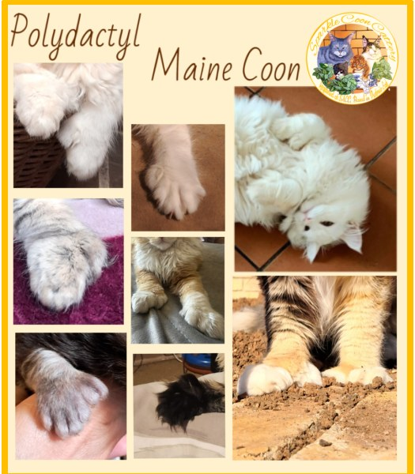

A unique trait with a long history in the Maine Coon breed.

Polydactyl Maine Coons are one of the reasons we fell in love with this incredible breed.
Their unique extra toes are part of the charm and history that make Maine Coons so special to us.
We are proud to be one of the few Maine Coon catteries in South Africa that still breed with this unique trait.
Most people have heard of Maine Coons and their impressive size; however, very few are familiar with polydactyl Maine Coons.
Polydactyly is caused by an autosomal dominant gene that gives a Maine Coon extra toes, often appearing like little "thumbs" on the front paws.
A typical cat has 18 toes — five on each front paw and four on each back paw.
Polydactyl Maine Coons can have up to seven toes on each front paw and up to six on each back paw.
In our lines, the extra digits are most commonly seen on the front paws and only rarely on the back.
Autosomal dominant means a kitten only needs one parent that has the gene in order to inherit it.
Not all cats with the gene will show extra toes, and the number can differ. Some may have just one extra toe, while others may have several.
The gene is not linked to inbreeding or health defects — it is simply a natural genetic variation.
The polydactyly gene is believed to have been part of the original Maine Coon population. Historical accounts suggest that as many as 40% of early Maine Coons were polydactyl, until many breeders began selecting against the trait as it was considered undesirable in show standards.
Today, multiple breeders overseas are working to preserve and protect this unique and historic characteristic.
There is no definitive or documented origin of Maine Coon cats or polydactyl Maine Coons. However, it is widely believed that they served as working ship cats, valued for their excellent mousing abilities.
It was also popularly believed that sailors in the 1800s favoured polydactyl cats because their broader, extra-toed paws provided better balance on rough seas.
Their larger paws were also thought to help them move more easily across snow, functioning like natural "snowshoes" in harsh winter climates.
Polydactyly itself is not considered harmful to the cat.
The main practical consideration is regular nail trimming,
particularly to prevent nails on additional digits from
becoming overgrown or causing problems such as ingrown nails.
(It can take months before ingrown nails can occur. Trim their nails (NOT DECLAWING) every few weeks and have lots of scratching surfaces.)
Polydactyl Maine Coons have been an important part of Sparkle Coon's history.
Our first polydactyl Maine Coon was Sir Barnaby, a Blue Tabby from the new Lenthall Cattery. He became an important part of our early journey with this unique trait.
We continue to appreciate the distinctive appearance and history of polydactyl Maine Coons and are proud to preserve this natural characteristic within our lines.